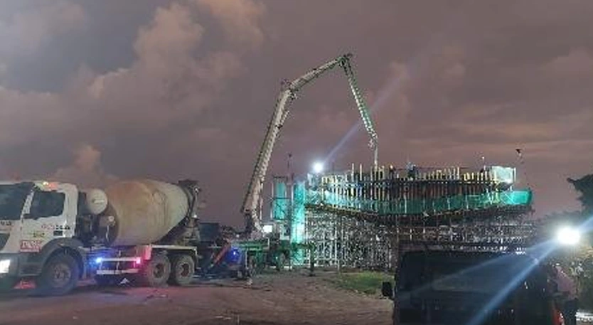
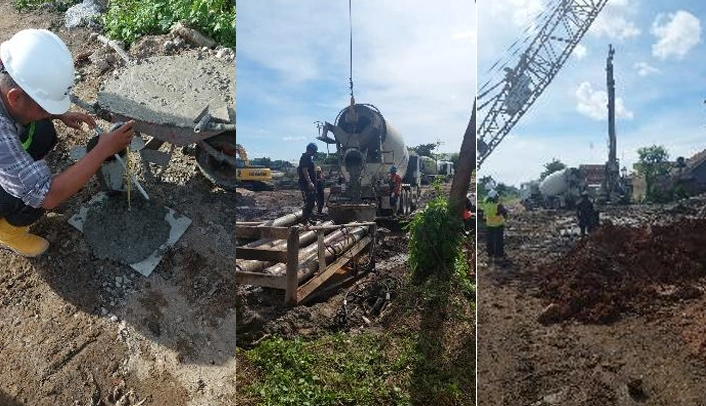
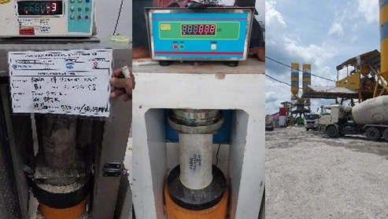
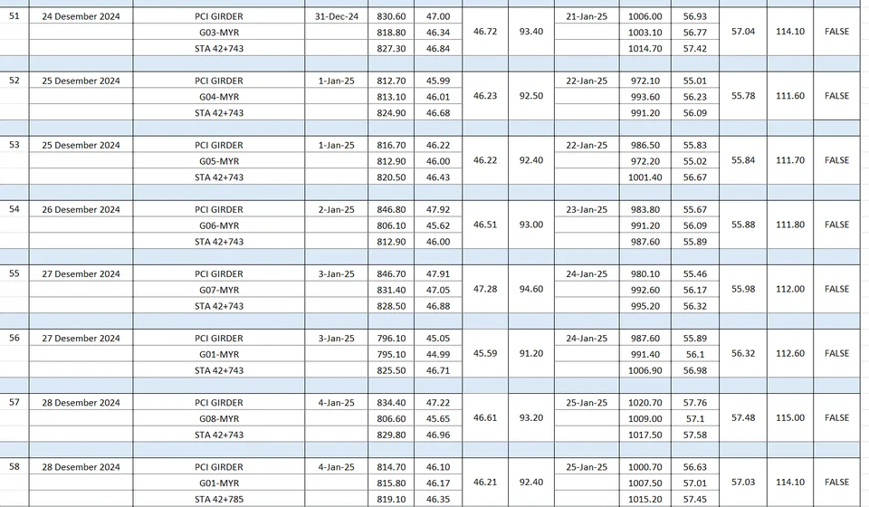

Jogja–Solo Toll Road —
QC Internship at PT DMT
Quality Control internship on the Yogyakarta–Solo Toll Road at PT DMT (Daya Mulia Turangga), covering pier construction monitoring and materials testing. One task digitized 200 sets of concrete compression test data with AI-assisted tools in 3 days.

Project Context
The Yogyakarta–Solo Toll Road (Tol Jogja–Solo) is a major national strategic infrastructure project forming part of the Trans-Java Toll Road network. Spanning tens of kilometers through Central Java and the Special Region of Yogyakarta, this project involves significant engineering challenges including complex terrain, river crossings, and urban interface management.
PT DMT (Daya Mulia Turangga) is involved as construction contractor for segments of this toll road project. The internship provided rare access to observe and participate in real-world, large-scale infrastructure delivery.
Internship Activities
- Monitored pier construction activities and quality control procedures on site
- Performed laboratory and in-situ testing for materials quality assurance on road and bridge structures
- Supported coordination between the site team and the design team
- Learned about construction sequencing, materials management, and quality assurance for road and bridge structures
- Used AI-assisted tools to process and digitize 200 sets of concrete compression test data and images in 3 days
Key Learnings
- Real-world gap between design documentation and field implementation
- Construction management processes for major infrastructure projects
- Quality control systems for road pavement and structural elements
- Coordination between contractors, consultants, and government project owners


